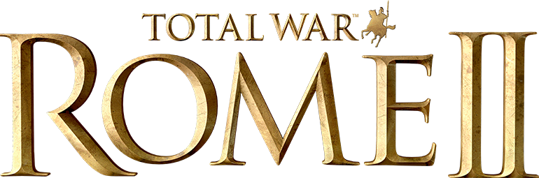

lien vers la page officiel du jeux
Total War: Rome 2
Total War: Rome 2 est un jeu vidéo de stratégie développé par Creative Assembly et édité par Sega. Le jeu se déroule durant l'Antiquité romaine, de la création de la République romaine jusqu'à la fondation de l'Empire.